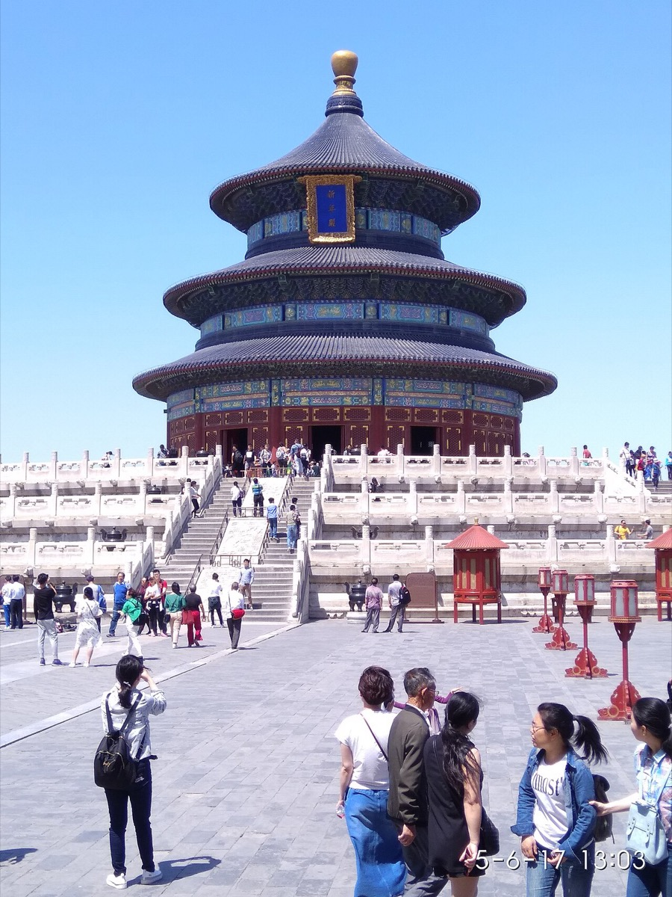
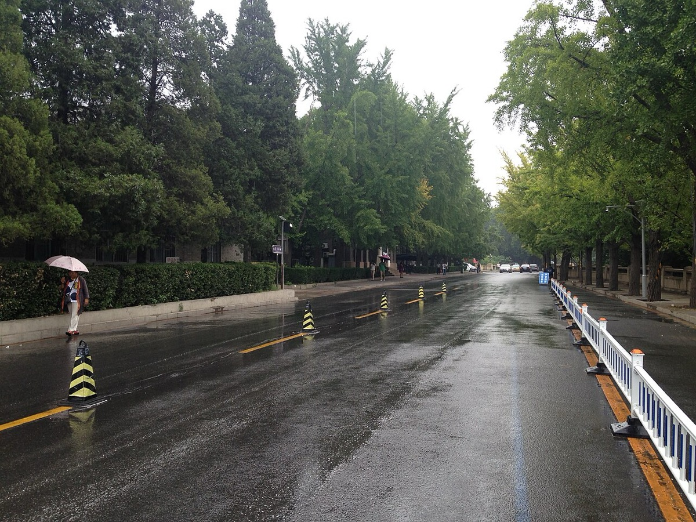

00 / Começar
Um semestre em Pequim.
Do Técnico à Tsinghua. Preparar a partida, perceber a cidade e viver o semestre com curiosidade.
2 min de leituraMais do que uma viagem. Um semestre para estudar, descobrir e aprender a viver do outro lado do mundo.

北京Créditos, língua das aulas e o plano para Compiladores.
02Categoria, convite individual e confirmação institucional.
03Residência no campus, reserva e alternativa em Haidian.
Os prazos do programa Hong Kong/Macau/Taiwan não são os da candidatura internacional. Confirma a tua categoria com o IST.
Ver fontes e prazos ↗Do primeiro documento ao último passeio.
Escolhe um tema e começa por aí.
Do Técnico à Tsinghua. Preparar a partida, perceber a cidade e viver o semestre com curiosidade.
2 min de leituraUm plano por fases para transformar uma intenção de intercâmbio num semestre organizado.
3 min de leituraCalendário, admissões e pontos de contacto para chegar à universidade certa, no momento certo.
4 min de leituraUma boa viagem começa por um semestre que o Técnico consegue reconhecer.
4 min de leituraRotinas, amigos, clubes e tecnologia: como fazer do campus a tua base em Pequim.
4 min de leituraO semestre do IST na Tsinghua exige documentação de estudo. Decide o visto com a admissão, conta toda a estadia e protege as viagens fora da China.
3 min de leituraCompara o itinerário completo, distingue PEK de PKX e prepara a última etapa até ao portão e edifício certos.
3 min de leituraUm pagamento móvel bem configurado ajuda muito. Um cartão de reserva e cash tornam falhas de telemóvel ou banco recuperáveis.
3 min de leituraPlaneia rede local, acesso institucional e recuperação de contas para que os bloqueios e a troca de SIM não interrompam aulas ou projetos.
3 min de leituraEscolhe ferramentas para cada tarefa e testa a tua conta. A instalação da aplicação é só o primeiro passo.
3 min de leituraComo preparar um semestre em Pequim que atravessa inverno, primavera e início do verão, sem confundir médias históricas com a previsão do teu dia.
4 min de leituraEscolher a base certa para Tsinghua, perceber as distâncias e descobrir a cidade por zonas, sem transformar cada dia de aulas numa viagem.
4 min de leituraComo preparar a candidatura à residência e uma alternativa fora do campus sem assumir quartos, tarifas ou condições de 2027 que ainda não estão confirmadas.
4 min de leituraA rede serve bem deslocações longas. O tempo até à entrada correta e a última ligação fazem parte do percurso.
3 min de leituraCarros resolvem chegadas e regressos tardios; bicicleta pode ajudar dentro e fora do campus quando conta e percurso estão preparados.
3 min de leituraReserva com passaporte, identifica a estação e conta o percurso completo. A China acessível por comboio não cabe toda num fim de semana.
3 min de leituraOrganizar uma das visitas essenciais do semestre: entradas distintas, passaporte original, janela de compra e um percurso com tempo para compreender o palácio.
4 min de leituraMutianyu, Badaling e Simatai servem planos diferentes. Como decidir durante o semestre, preparar transporte e respeitar os limites das áreas abertas.
4 min de leituraPalácio de Verão, Yuanmingyuan, Templo do Céu, Yonghegong e Guozijian: como distribuir as visitas pela primavera sem confundir parques com edifícios.
4 min de leituraCaminhadas curtas, lagos, colinas e flores de primavera para transformar Pequim numa cidade conhecida ao longo do semestre.
3 min de leituraDo museu da própria Tsinghua a 798 e ao National Museum: escolhas para tardes livres, dias de chuva e saídas com colegas.
4 min de leituraDa primeira refeição em Tsinghua ao pato à Pequim: como criar uma rotina, descobrir sabores e explicar restrições alimentares com clareza.
4 min de leituraUm pequeno kit de comunicação em caracteres chineses e pinyin, com hábitos que ajudam na cantina, nos transportes, nas compras e no campus.
4 min de leituraOnde procurar o essencial, como avaliar compras e o que confirmar antes de contar com devoluções, reembolsos fiscais ou transporte na bagagem.
4 min de leituraO que preparar em Portugal, como usar cuidados de saúde em Tsinghua e quais as diferenças entre seguro universitário, seguro de viagem e cobertura efetiva.
4 min de leituraUma página para guardar antes de partir: números locais, apoio universitário e consular, registo de alojamento e respostas práticas a problemas comuns.
4 min de leituraPlanos flexíveis para conhecer a cidade ao longo de um semestre, com tempo para voltar aos lugares.
4 min de leituraUm simulador transparente, com hipóteses editáveis e margem para os imprevistos.
3 min de leituraUma checklist guardada no navegador e uma mala preparada para passar do inverno ao verão.
3 min de leituraPesquisa rastreável, documentos locais e uma distinção clara entre factos e hipóteses.
3 min de leituraNenhum tema corresponde. Experimenta outra palavra ou abre a pesquisa geral.

清华大学 · TSINGHUA UNIVERSITYO campus vai ser a tua base. O guia ajuda-te a montar uma rotina, conhecer pessoas e perceber o que vale a pena resolver antes de chegar.
Descobrir a vida no campusMarcos do calendário oficial. Acolhimento, exames e alojamento precisam de confirmação individual.
Registo até dia 21. Aulas a partir de dia 22.
Projetos, clubes, mandarim e primeiras saídas.
Jardins, Muralha e viagens entre avaliações.
Confirmar exames, transcript e data de regresso.
Estas 30 páginas juntam pesquisa institucional atual, decisões que precisam de confirmação e propostas práticas para uma estadia entre fevereiro e julho de 2027. Podes ler por ordem ou pesquisar um problema concreto. As fontes aparecem junto das secções e estão reunidas num diretório pesquisável.